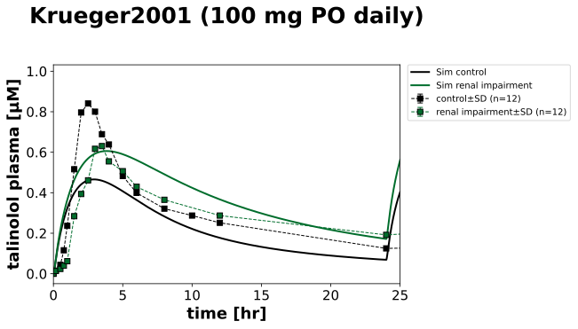
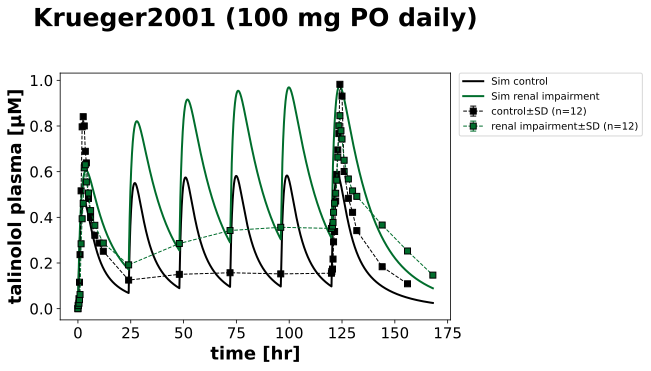
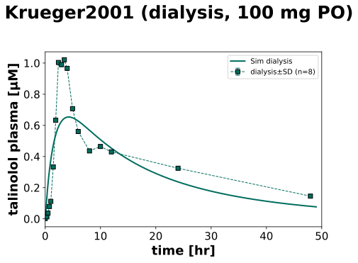
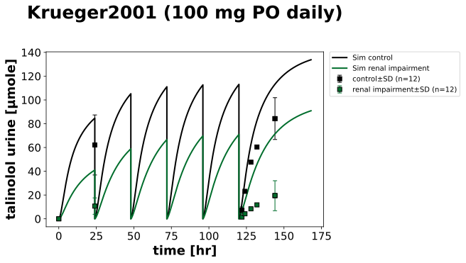
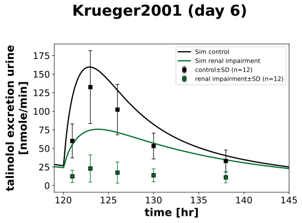

Overview
Models
| model | source |
|---|---|
| model | talinolol_body_flat.xml |
Datasets
Figures (5)










Code
"""Simulation experiment of the study Krueger2001."""
from typing import ClassVar, override
from pkpdsim.metadata import (
ApplicationForm,
Dosing,
Fasting,
Health,
PKPDMappingMetaData,
Route,
Tissue,
)
from sbmlsim import Q
from sbmlsim.data import DataSet
from sbmlsim.fit import FitData, FitMapping
from sbmlsim.plot import Axis, Figure
from sbmlsim.simulation import Change, Simulation
from pkdb_models.models.talinolol import MODEL
from pkdb_models.models.talinolol.experiments.base_experiment import (
TalinololSimulationExperiment,
)
class Krueger2001(TalinololSimulationExperiment):
"""Simulation experiment of Krueger2001.
100 mg talinolol (Cordanum tablet) once a day for 6 days after an overnight
fast in 12 healthy volunteers (CLcr 114.4 ml/min, 70.2 kg) and 12 patients
with renal impairment (CLcr 27.0 ml/min, 9.7-50.8, 72.0 kg; the CLcr of
the groups are the means of the individuals of Fig3, Cockcroft-Gault):
plasma on day 1 and 6 with the troughs in between (Fig1), urine 0-24 hr on
day 1 and 6 (Tab1a) and the renal excretion rate 0-24 hr on day 6 (Tab2a,
and the cumulative amounts calculated from it, Tab2b). 8 patients with
terminal renal insufficiency took a single dose (Fig2), with a
hemodialysis 4-9 hr after the dose which removed 2.1 mg (2 % of the dose,
not simulated); their renal function is the class of end stage renal
disease (the residual urine was below 1 % of the dose).
The renal function `KI__f_renal_function` is the CLcr relative to 101
ml/min. The urine is collected per day, the cumulative urine of the
simulation is reset at every dose; a data point at the time of a dose is
compared with the state before the dose, so the 24 hr point of day 1 is
the trough before the second dose and the urine of day 1. Day 1 (up to 24
hr) is a single dose, the data after it multiple dosing.
"""
#: the CLcr of the groups [ml/min] and the body weight [kg]
groups: ClassVar[dict[str, tuple[float, float]]] = {
"control": (114.44, 70.2),
"increased_renal_impairment": (27.0, 72.0),
}
health: ClassVar[dict[str, Health]] = {
"control": Health.HEALTHY,
"increased_renal_impairment": Health.RENAL_IMPAIRMENT,
"severe_renal_impairment": Health.RENAL_IMPAIRMENT,
}
colors: ClassVar[dict[str, str]] = {
"control": TalinololSimulationExperiment.renal_colors["Normal renal function"],
"increased_renal_impairment": TalinololSimulationExperiment.renal_colors[
"Severe renal impairment"
],
"severe_renal_impairment": TalinololSimulationExperiment.renal_colors[
"End stage renal disease"
],
}
names: ClassVar[dict[str, str]] = {
"control": "control",
"increased_renal_impairment": "renal impairment",
"severe_renal_impairment": "dialysis",
}
#: the time of the dose of day 6 [hr]
day6: ClassVar[float] = 120.0
@override
def datasets(self) -> dict[str, DataSet]:
dsets = {}
for fig_id in [
"Fig1", # plasma, day 1 to 7, control and renal impairment
"Fig2", # plasma, single dose, dialysis
"Tab1a", # cumulative amount urine 0-24 hr of day 1 and day 6
"Tab2a", # renal excretion rate, day 6
"Tab2b", # cumulative amount urine, day 6, from the rates
]:
df = self.load_dataframe(fig_id)
for label, df_label in df.groupby("label"):
label = str(label)
dset = DataSet.from_df(df_label, self.ureg)
dset.unit_conversion("mean", 1 / self.Mr.tal)
if fig_id in ["Tab2a", "Tab2b"]:
# the times are relative to the dose of day 6
dset["time"] = dset["time"] + self.day6
label = label.replace("firstday", "urine_day6")
if fig_id in ["Fig1", "Tab1a"]:
dsets[f"{label}_day1"] = dset[dset["time"] <= 24]
dsets[f"{label}_multi"] = dset[dset["time"] > 24]
dsets[label] = dset
return dsets
@override
def simulations(self) -> dict[str, Simulation]:
simulations = {}
for group, (clcr, bw) in self.groups.items():
# 100 mg every day for 6 days (0 to 120 hr), the urine collected
# per day
simulations[f"tal_po_100_{group}"] = Simulation(
time_unit="hr",
end=168,
preinit_changes={
**self.default_changes(),
"PODOSE_tal": Q(100, "mg"),
"BW": Q(bw, "kg"),
"KI__f_renal_function": Q(clcr / 101, "dimensionless"),
},
changes=[
self.add_doses(
[24.0 * day for day in range(1, 6)],
{"PODOSE_tal": Q(100, "mg")},
),
Change(
[24.0 * day for day in range(1, 6)],
{"Aurine_tal": Q(0, "mmole")},
),
],
)
simulations["tal_po_100_severe_renal_impairment"] = Simulation(
time_unit="hr",
end=49,
preinit_changes={
**self.default_changes(),
"PODOSE_tal": Q(100, "mg"),
"BW": Q(73.5, "kg"),
"KI__f_renal_function": Q(
self.renal_map["End stage renal disease"], "dimensionless"
),
},
)
return simulations
@override
def fit_mappings(self) -> dict[str, FitMapping]:
mappings = {}
# dataset, observable, tissue, dosing by key of the mapping
data = {
"plasma_{group}_day1": (
"TAL_plasma_{group}_day1",
"[Cve_tal]",
Tissue.PLASMA,
Dosing.SINGLE,
),
"urine_{group}_day1": (
"TAL_urine_{group}_day1",
"Aurine_tal",
Tissue.URINE,
Dosing.SINGLE,
),
"multi_plasma_{group}": (
"TAL_plasma_{group}_multi",
"[Cve_tal]",
Tissue.PLASMA,
Dosing.MULTIPLE,
),
"multi_urine_{group}": (
"TAL_urine_day6_{group}",
"Aurine_tal",
Tissue.URINE,
Dosing.MULTIPLE,
),
}
for group in self.groups:
for key, (dset, yid, tissue, dosing) in data.items():
mappings[f"fm_tal_po_100_{key.format(group=group)}"] = FitMapping(
self,
reference=FitData(
self,
dataset=dset.format(group=group),
xid="time",
yid="mean",
yid_sd="mean_sd",
count="count",
),
observable=FitData(
self, task=f"task_tal_po_100_{group}", xid="time", yid=yid
),
metadata=PKPDMappingMetaData(
tissue=tissue,
route=Route.PO,
application_form=ApplicationForm.TABLET,
dosing=dosing,
health=self.health[group],
fasting=Fasting.FASTED,
),
)
mappings["fm_tal_po_100_plasma_severe_renal_impairment"] = FitMapping(
self,
reference=FitData(
self,
dataset="TAL_plasma_severe_renal_impairment",
xid="time",
yid="mean",
yid_sd="mean_sd",
count="count",
),
observable=FitData(
self,
task="task_tal_po_100_severe_renal_impairment",
xid="time",
yid="[Cve_tal]",
),
metadata=PKPDMappingMetaData(
tissue=Tissue.PLASMA,
route=Route.PO,
application_form=ApplicationForm.TABLET,
dosing=Dosing.SINGLE,
health=Health.RENAL_IMPAIRMENT,
fasting=Fasting.FASTED,
),
)
return mappings
@override
def figures(self) -> dict[str, Figure]:
return {
**self.figure_plasma(),
**self.figure_urine(),
}
def figure_plasma(self) -> dict[str, Figure]:
"""Figures of the plasma concentration, day 1, days 1-7 and dialysis."""
figures = []
for sid, xaxis in {
"Fig1_PO_plasma_day1": Axis(self.label_time, unit="hr", min=0, max=25),
"Fig1_PO_plasma": Axis(self.label_time, unit="hr"),
}.items():
f = Figure(
experiment=self,
sid=sid,
num_rows=1,
num_cols=1,
name=f"{self.__class__.__name__} (100 mg PO daily)",
)
# the legend inside the panel covers the peaks
f.settings = {**f.settings, "legend_position": "outside"}
plots = f.create_plots(xaxis=xaxis, legend=True)
plots[0].set_yaxis(self.label_tal_plasma, unit="µM")
for group in self.groups:
plots[0].add_data(
task=f"task_tal_po_100_{group}",
xid="time",
yid="[Cve_tal]",
label=f"Sim {self.names[group]}",
color=self.colors[group],
)
plots[0].add_data(
dataset=f"TAL_plasma_{group}",
xid="time",
yid="mean",
yid_sd="mean_sd",
count="count",
label=self.names[group],
color=self.colors[group],
)
figures.append(f)
group = "severe_renal_impairment"
f = Figure(
experiment=self,
sid="Fig2_PO_plasma",
num_rows=1,
num_cols=1,
name=f"{self.__class__.__name__} (dialysis, 100 mg PO)",
)
plots = f.create_plots(
xaxis=Axis(self.label_time, unit="hr", min=0, max=50), legend=True
)
plots[0].set_yaxis(self.label_tal_plasma, unit="µM")
plots[0].add_data(
task=f"task_tal_po_100_{group}",
xid="time",
yid="[Cve_tal]",
label=f"Sim {self.names[group]}",
color=self.colors[group],
)
plots[0].add_data(
dataset=f"TAL_plasma_{group}",
xid="time",
yid="mean",
yid_sd="mean_sd",
count="count",
label=self.names[group],
color=self.colors[group],
)
figures.append(f)
return self.figures_by_sid(*figures)
def figure_urine(self) -> dict[str, Figure]:
"""Figures of the urine: amounts of day 1 and 6, rates of day 6."""
f_amount = Figure(
experiment=self,
sid="Tab1a_Tab2b_PO_urine",
num_rows=1,
num_cols=1,
name=f"{self.__class__.__name__} (100 mg PO daily)",
)
# the legend inside the panel covers the data
f_amount.settings = {**f_amount.settings, "legend_position": "outside"}
plots = f_amount.create_plots(
xaxis=Axis(self.label_time, unit="hr"), legend=True
)
plots[0].set_yaxis(self.label_tal_urine, unit="µmole")
for group in self.groups:
plots[0].add_data(
task=f"task_tal_po_100_{group}",
xid="time",
yid="Aurine_tal",
label=f"Sim {self.names[group]}",
color=self.colors[group],
)
# Ae of day 1 and 6 (Tab1a) and the cumulative amounts of day 6
for dset, label in [
(f"TAL_urine_{group}", self.names[group]),
(f"TAL_urine_day6_{group}", None),
]:
plots[0].add_data(
dataset=dset,
xid="time",
yid="mean",
yid_sd="mean_sd",
count="count",
label=label,
color=self.colors[group],
linestyle="",
)
f_rate = Figure(
experiment=self,
sid="Tab2a_PO_renalrate",
num_rows=1,
num_cols=1,
name=f"{self.__class__.__name__} (day 6)",
)
plots = f_rate.create_plots(
xaxis=Axis(self.label_time, unit="hr", min=self.day6 - 1, max=145),
legend=True,
)
plots[0].set_yaxis(self.label_tal_urine_rate, unit="nmole/min")
for group in self.groups:
plots[0].add_data(
task=f"task_tal_po_100_{group}",
xid="time",
yid="KI__TALEX",
label=f"Sim {self.names[group]}",
color=self.colors[group],
)
# mean rates of the collection intervals, at their midpoints
plots[0].add_data(
dataset=f"TAL_renalrate_{group}",
xid="time",
yid="mean",
yid_sd="mean_sd",
count="count",
label=self.names[group],
color=self.colors[group],
linestyle="",
)
return self.figures_by_sid(f_amount, f_rate)
if __name__ == "__main__":
MODEL.run_experiments(Krueger2001, output_dir=Krueger2001.__name__)